Laser Cut Pieces
During my internship at Discovery World, I had access to a laser cutter for personal projects. This inspired me to learn Illustrator so I could use the laser cutter. These are some of my favorite pieces. (Note: colors are for the laser cutter. Black- etch, red- cut, blue- score)
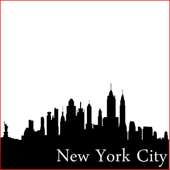
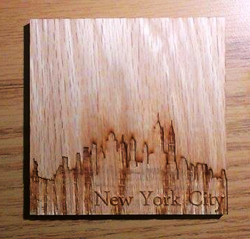
Coaster created for my friend who was going to college in New York.
Material: 1/4" oak
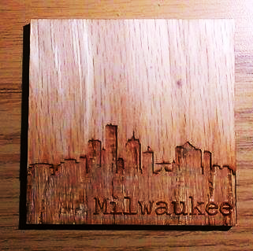
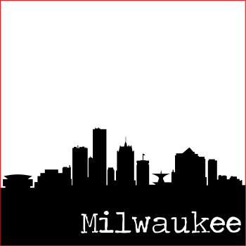
Coaster created for the same friend to remember her roots.
Material: 1/4" oak
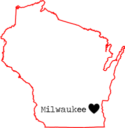
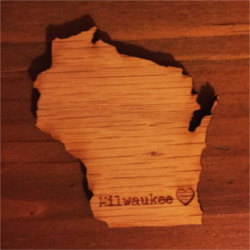
Created for some friends and I to remember our hometown.
Material: 1/4" oak
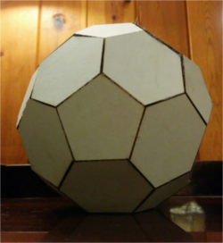
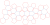
Buckminsterfullerene model created for extra credit in chemistry class. Each vertex simulates a carbon atom.
Materials: cardboard, hot glue
RKHS Homework
I created RKHS Homework at the beginning of my sophomore year in high school. During my freshman year, I was known for reminding my friends of their homework and to study for tests. So I decided to make my life easier by creating a Facebook group where I would post all this information once to everyone. Additionally, people in the group could ask their school related questions to a more relevant audience than just their Facebook friends. It started out with around 30 of my classmates and grew to support 220 students by the end of senior year. Every day, I would post the homework for an average of 23 or more classes. RKHS Homework became a place where students would check to see if they had homework and ask questions about assignments. I continued as the moderator of this group right until graduation.
In addition to RKHS Homework, during my junior year, I created a Harry Potter-like House Cup tournament for anyone who wanted to be involved. Students would fill out a questionnaire designed by me and I sorted them into one of the houses accordingly. This tournament had 54 members by the end of senior year. Points were awarded for a variety of good habits like volunteering, athletics, leadership, school spirit, and helping others in the group. 4 times per year the Cup was awarded to the highest scoring house. Members of the winning house received cookies I baked, and I changed the Facebook group cover photo in their honor (like the decorations in the Hogwarts Great Hall). Below are two of the banners I created in GIMP.
Created for Ravenclaw (house colors blue and bronze). Meant to look like ink on parchment.
Created for Gryffindor, (house colors crimson and gold). Meant to look firey.
Photography
I also do some photography, mainly on my Nexus 5. You can view more photos here and GIFs here.
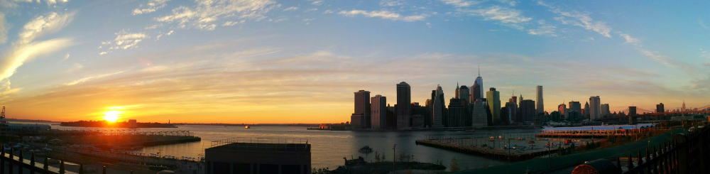
Sunset from the Brooklyn Heights Promenade.
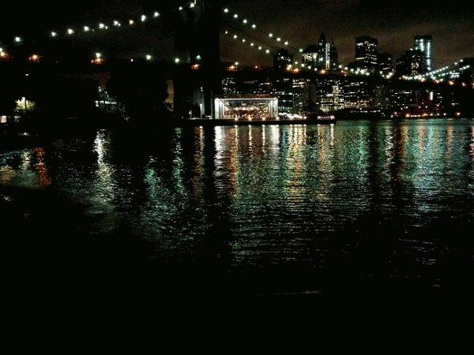

(Left) Dumbo at night. (Right) Grand Central Station.
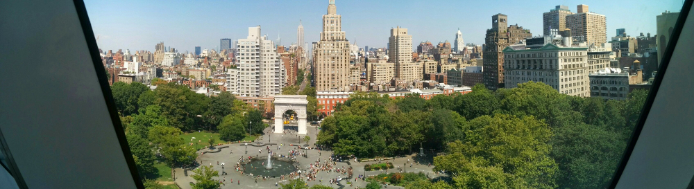
Washington Square Park from the Kimmel Center
This Website
I created this website from scratch with just a text editor. The icons on the contact page were made by Freepik from www.flaticon.com is licensed by CC BY 3.0